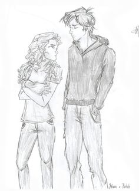
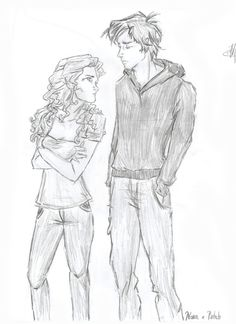

Sipnosis:
Enamorarse no formaba parte de los planes de Nora Grey. Nunca se había sentido especialmente atraída por sus compañeros del instituto, a pesar de los esfuerzos de su mejor amiga,Vee,para encontrarle una pareja.Así era hasta la llegada de Patch. Con su sonrisa fácil y sus ojos que parecen ver en su interior, Nora se siente encandilada por él a pesar de sí misma.
Tras una serie de encuentros aterradores,Nora no sabe en quién confiar. Patch aparece allí donde va y parece saber más sobre ella que su mejor amiga. Imposible decidir si debe darse por vencida y sucumbir a sus encantos, o salir huyendo y esconderse
Cuando intenta encontrar algunas respuestas, descubre una verdad que es más perturbadora que nada de lo que Patch le hace sentir.
Porque Nora está en el medio de una ancestral batalla entre los inmortales y los que han caído,y cuando se trata de escoger bandos, la elección equivocada puede costarte la vida
RESEÑA
Si bien puede pecar de ser “otra de esas novelas de amoríos sobrenaturales”, la historia engancha por la personalidad de sus personajes: Nora se muestra desconfiada y no se deja engañar por su compañero de “bio”, mientras que Patch es cínico pero aveces es amable. Si a eso le sumamos unos excelentes secundarios, la diversión está asegurada.
Además, la narración de Hush, hush nos habla muy bien de la autora: Becca sabe mantener el interés del lector y, a pesar de la cantidad de páginas, éstas pasan volando.
En conjunto, Hush, hush es una novela llena de misterio que te hará pasar un buen rato.
COMENTARIOS POSITIVOS
- “Lo que más me gustó fue la sorpresa del final,pasan cosas que de verdad no me esperaba ni por asomo,no dejó de parecerme un libro entretenido, es un libro para pasar el rato y que recomiendo para las amantes de la fantasía,que te mantiene enganchada aunque sepas (o no) que va a pasar a continuación y que se lee rápido.”-Enamorados de los libros
- “La verdad es que hace poco termine la saga y me encanto es una de mis favoritas y Patch me enamoró desde el minuto uno jaja a mi se me ha echo ligera, no me costaba nada poner a leer y tenía muchas ganas de llegar al final”-un lector
- “Una novela excitante que se lee con avidez.La tempestuosa relación entre Nora y Patch, el prototipo de chico malo, es genuinamente seductora.Los aficionados a las novelas de temática paranormal están en parabienes”- Publishers Weekly
- Los aficionados al terror y romance, que se han cansado del hombre lobo (y del vampiro) de siempre, dan la bienvenida a esta nueva aproximación al corazón de las tinieblas”-Booklist
- “Sigo sin entender por qué la mayoría de las personas sigue criticando Hush Hush. Para mi ha sido una de las mejores sagas que he leído. Además de que es de los primeros libros que he leído acerca de ángeles caídos. Me he enamorado de Patch. Ok si, típico, conoces al chico guapo y perfecto en clase de Biología pero...¿y eso qué?. A mi me gusta. Conforme avanzas con la serie te va sacando unas lágrimas. Además de que Vee (mejor amiga de Nora) me ha sacado un montón de sonrisas. La amo también a ella. No se guíen por las críticas, si lo quieren leer, no se detengan”-un lector.
COMENTARIOS NEGATIVOS
- “Empecé este libro con muchas expectativas, pero resultó no ser tan apasionante como yo esperaba. Hasta la mitad hay una buena mezcla de amor e intriga, además, se disfruta de cómo los protagonistas parecen interesarse el uno en el otro. Pero luego las actitudes de ambos se vuelven repetitivas y apenas sucede nada. El final fue decepcionante y no me creí la parte del romance”.- un lector
- *ESTE COMENTARIO CONTIENE SPOILERS!!!!!
- “En mi opinión le falto mucho al libro. Me lo han recomendado más de dos chicas que aman los libros tal y como yo. Pero a mi parecer me quedo a deber, situaciones que, tu como lectora, notas desde páginas anteriores la protagonista, Nora, no se da cuenta hasta que (su “amiga”,enemigo) Vee se lo hace obvio, y esto para mi hace ver a Nora muy tonta. Patch, típico chico malo pero demasiado egoísta, y dramático, los primeros capítulos fueron flojos, muy lentos, no te atrapaban. Ahora, el error más desastroso, al principio del libro se dice que Vee es casi la gemela de Nora y en el desarrollo del libro muchas veces Vee es la que la hace hacer cosas en contra de su voluntad, o la escucha, ni atención le presta cuando le dice algo muy importante”- un lector
- “Es un libro bastante predecible, por ende nada innovador y con la típica protagonista que en cada libro se pone más insoportable. Si te gustan los clichés este es el libro perfecto”.-un lector
Escrito por: Sofi